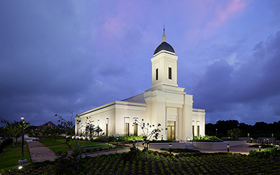
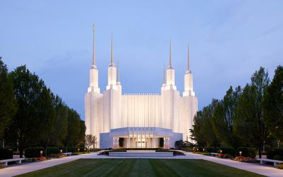
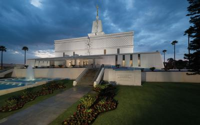
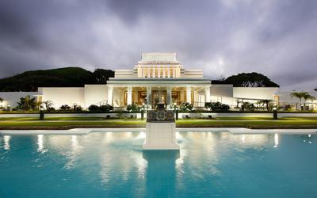

Temple Album
Home
Old
New
Large
Small
Temples Around the World
Aba Nigeria Temple
Manti Utah Temple
Payson Utah Temple

Yigo Guam Temple

Washington D.C. Temple
Lima Peru Temple

Mexico City Mexico Temple
San Diego California Temple

Laie Hawaii Temple